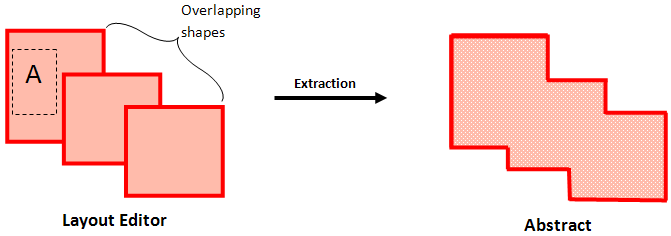

Color Representation for Pins
This section provides information about the implementation of MPT in the following abstract generation steps.
Pins Step
Generating pins is the first step of the abstract generation process. Typically, in this step, Abstract Generator derives pin shapes from the text labels in the layout view and places them at the locations of the corresponding text labels.
To support MPT, in the layout editor, shapes are highlighted in different colors to represent different masks. During the Pins step, when searching for pin shapes and chasing shapes, Abstract Generator recognizes the effective color of shapes in the layout editor. Consequently, the pins that are generated inherit the colors of the shapes from which they are derived.
The color lock attribute of pins is forward-propagated to the abstract view. Consider a color locked pin in the layout design. In the abstract view, the color lock attribute is applied to all the pins in the layer in which the pin is located.
Extract Step
The Extract step is the second stage of abstract generation. This step traces the connectivity between shapes and terminals, starting at the pin shapes created in the Pins step.
To support MPT, during extraction, overlapping pins that lie on the same layer and on the same mask on the layout are merged in the abstract view. A single shape is generated by Abstract Generator.
Overlapping pins that are located on different masks on the layout are not merged in the abstract. Different pin shapes corresponding to the different masks are generated.
The layout editor has two overlapping shapes on Mask 1 and a third shape is on Mask 2. Notice that during extraction, overlapping shapes on the same mask are merged, whereas a separate pin shape is generated for the pin that lies on a different mask.
In the layout editor, overlapping shapes are on different masks. During extraction, pin merging does not happen. Separate pin shapes for each pin are generated in the abstract.
Abstract Step
The Abstract step is the third step of the abstract generation process. In this step, you can use the options in the Adjust tab to adjust pin shapes for creating the final required pin shapes. These pin shapes are then fractured into rectangles.
MPT support has been extended to the options on the Adjust tab of the Abstract step. Options for performing the following tasks now recognize the colors of the original shapes in the layout editor:
- Creation of square boundary pins for signal and power nets
- Creation of ring pins for power nets
- Creation of follow ring pins for power nets
- Grouping the power geometries
- Setting the options for CLASS CORE ports
- Creating CLASS BUMP ports
- Specifying power rail widths, offsets, and shapes
- Assigning layers for pin geometry
-
Fracturing pins
Pin shapes created using the above options inherit colors from the original shapes. For example, two pin shapes created by fracturing a single rectilinear shape will inherit the color of the original rectilinear shape.
Consider two pin shapes, A and B located on mask 1 and mask 2, respectively. Pin A is rectangular, whereas pin B is polygonal in shape.
During the abstract step, the rectangular pin shape is not fractured, whereas the polygonal pin shape is fractured into smaller rectangles. Thus, pin B is fractured into two rectangles, which remain on mask 2.
Related Topics
Abstract Step in Standalone Abstract Generation
Extract Step in Standalone Abstract Generation
Pins Step in Standalone Abstract Generation
Return to top